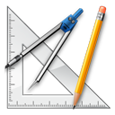

Quick插件 如何开发一个Quick插件
Quick插件 如何开发一个Quick插件
Quick允许您编写自己的插件。查看自己已经拥有的插件方法很简单，在Quick中输入@就可以看到了。
如果您在@后面输入文字，则Quick会检索所有插件的名字，来筛选出您想要调用的插件。
所有的插件都保存在了Quick主程序目录的plugins文件夹下。如果您写好了插件，请放在此目录下。
开发Quick插件的工具为：
- Visual Studio
开发 现在开始准备插件开发了
Quick插件采用C#开发，如果您比较熟悉VB、C++，需要手动更改SDK中提供的源代码。
第一步：新建一个C#类库工程
第二步：将Quick主程序目录下的SDK文件夹中的IQuickPlugin.cs添加到您的插件工程
第三步：开始写代码
您需要把您的程序入口的类改名为QuickPlugin，并且继承IQuickPlugin接口。
以上是一段最简单的插件代码。IQuickPlugin的原型如下：
using System;
using System.Collections.Generic;
using System.Linq;
using System.Text;
namespace Froser.Quick
{
public interface IQuickPlugin
{
/// <summary>
/// 插件的标题，可以用[]表示注意，[]中的文字不会被显示出来，但是会被搜索到，用{}表示提示的参数名，它不会被搜索到，但是会被显示出来
/// </summary>
String Name { get; }
/// <summary>
/// 插件的描述
/// </summary>
String Description { get; }
/// <summary>
/// 插件是否接受参数
/// </summary>
Boolean AcceptArguments { get; }
/// <summary>
/// 适用插件的程序名，如wps、et、WINWORD，区分大小写，如果为空字符串，表示此插件适用于所有程序。如果适用于某些程序，请用逗号隔开，如wps, WINWORD
/// </summary>
String ApplicationName { get; }
/// <summary>
/// 插件触发时调用的方法
/// </summary>
/// <param name="sender">触发插件的COM对象
/// <param name="arguments">调用插件的参数
void Invoke(object sender, object[] arguments);
}
}
接口的每个字段和方法含义如下：
- Name: 插件的标题，可以用[]表示注意，[]中的文字不会被显示出来，但是会被搜索到，用{}表示提示的参数名，它不会被搜索到，但是会被显示出来
- Description: 插件的描述
- AcceptArguments: 是否接受参数
- ApplicationName: 适用插件的程序名，如wps、et、WINWORD，区分大小写，如果为空字符串，表示此插件适用于所有程序。如果适用于某些程序，请用逗号隔开，如wps, WINWORD
- Invoke(object sender, object[] arguments): 插件触发时调用的方法，sender为触发插件的COM对象，arguments为调用插件的参数
以下是一段插件示例，它接收参数，并会以对话框的形式展现出来（请引用System.Windows.Forms）：
using System;
using Froser.Quick;
using System.Windows.Forms;
namespace DemoPlugin
{
public class QuickPlugin : IQuickPlugin
{
public String Name { get { return "示例 [shili] {Msg}"; } }
public String Description { get { return "This is a demo plugin"; } }
public Boolean AcceptArguments { get { return true; } }
public String ApplicationName { get { return ""; } }
public void Invoke(object sender, object[] arguments)
{
MessageBox.Show(arguments[0].ToString ());
}
}
}
那么，当您运行插件的时候，会是这个样子的：
当您按下回车的时候，Quick会调用插件中的Invoke方法。例如，您是在WPS中调用此插件的，那么sender实参为WPS对象（一个kwps.application或wps.application对象），arguments数组为一个只有1个元素的字符串对象。
如果需要传入多个参数，参数与参数之间请用逗号或者空格隔开。
在此例中，程序会弹出一个Hello窗口（因为Hello World被认为是两个参数，如果要显示Hello World，请用引号包围它们）。
第四步：发布
当您写好插件并生成dll文件后，请将dll文件名改为您的插件入口类的命名空间名。如上例中，入口类QuickPlugin的命名空间为DemoPlugin，那么就把文件改为DemoPlugin.dll。如果命名空间由很多部分组成，如DemoPlugin.HelloWorld，那么请把dll文件名改为DemoPlugin.HelloWorld.dll。
当dll有了正确的文件名后，把它拷贝到plugins中，并点击Quick菜单中的“重新载入配置”便可使用。
如果您的插件无法被识别，请检查是否由以下原因引起：
- 插件没有拷贝到plugins文件夹
- 插件的文件名不是QuickPlugin所在的命名空间名
- 您不是把QuickPlugin.cs添加到了项目中，而是引用它生成的一个库
- 插件中的ApplicationName属性的值不是此时调用插件的进程名（如在WINWORD中是无法调用ApplicationName为winword的，因为大小写不符）
Quick插件开发进阶 控制宿主程序
如上面的例子所示，调用插件时将得到一个object对象。为了能够试用它，我们必须要将它还原，如应该将sender还原成kwps.application类型的对象。
传统的还原方式比较麻烦，要么是引用程序的COM组件库，将对象强制转换，要么就用反射，用InvokeMember方法来调用。
为了简化调用，您可以将SDK中的QuickReflection.cs添加到您的插件工程中。您可以用Reflection.Invoke来调用宿主程序的API，或者用Reflection.Set来对宿主程序的属性进行赋值。
例如：
public void Invoke(object sender, object[] arguments)
{
var tables_count = (int)Reflection.Invoke("ActiveDocument.Tables.Count", sender);
if (tables_count > 0)
{
Reflection.Invoke("ActiveDocument.Tables[1].Delete", sender);
}
}
上面是一段运行于WPS、Word中的插件代码，它的作用是，获得文档中的表格数，如果表格数大于1，则删除第1个表格。
Reflection.Invoke、Reflection.Set中，不支持运算，支持的语句风格和C#一致，例如[]代表下标，.代表成员运算符，()代表传入参数等。
您可以随意修改QuickReflection.cs中的内容，如需发布，请注明出处。